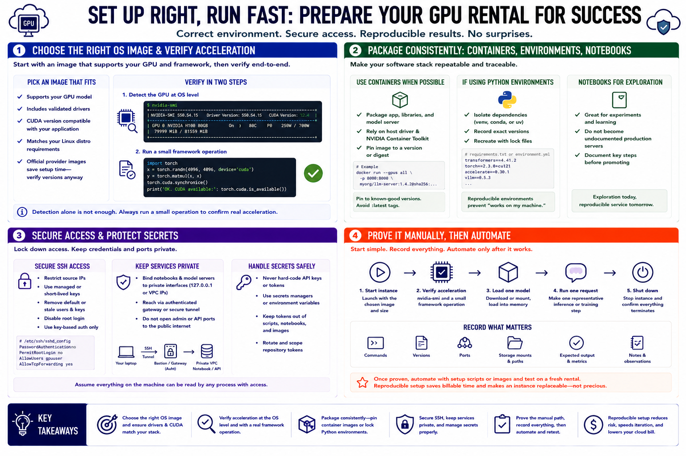

Setting Up the Environment
Connecting to LMS... Progress: in progress

Narration
Select an operating-system image that supports the accelerator and the intended framework. A provider image with validated drivers and CUDA can shorten setup, but its versions still need to match the application. Verify the GPU at the operating-system level, then run a small framework operation. Detection alone does not prove that model inference or training will use acceleration correctly.
Containers can package the application, libraries, and model server into a repeatable unit while relying on a compatible host driver and GPU runtime. Pin container images to known versions or digests. If using Python environments directly, isolate dependencies and record exact package versions. Notebooks are effective for exploration but should not become undocumented production servers.
Secure SSH before beginning model work. Restrict source addresses, use managed or short-lived keys where possible, and remove default or stale credentials. Bind notebooks and model servers to private interfaces. Reach them through an authenticated gateway or secure tunnel rather than opening administrative ports broadly. Keep API keys and model-repository tokens out of scripts, notebooks, and machine images.
Begin with a simple manual path: start the instance, verify acceleration, load one model, run one representative request, and shut down. Record commands, versions, ports, storage mounts, and expected output. Once the path is proven, automate it with reviewed setup scripts or images and test on a fresh rental. Reproducible setup saves billable troubleshooting time and makes an instance replaceable instead of precious.